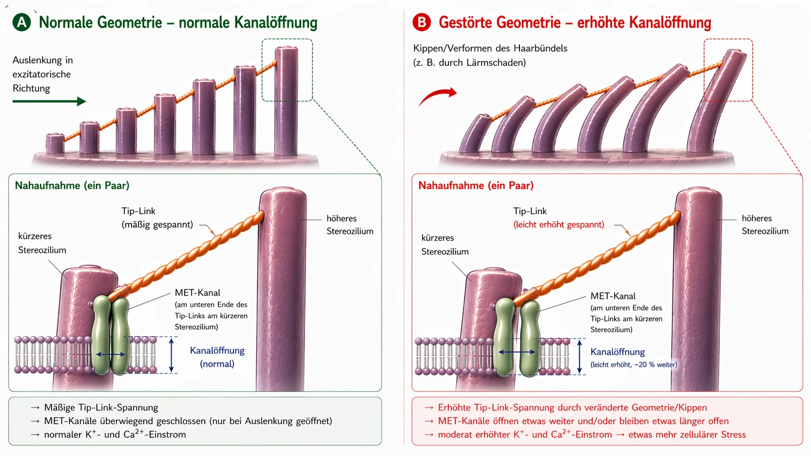

Lärmbedingter Tinnitus – wenn das Ohr an seine Grenzen kommt
Das hier ist meine eigene Erklärung, basierend auf jahrelanger Recherche und meinem eigenen, zweimal überwundenen Tinnitus – kein medizinischer Standard.
Auch ich war damals Betroffener von dieser extremen Erkrankung – wie ich bereits in meiner Biografie erzählt hatte.
Ich war so verzweifelt, dass ich mir geschworen hatte: Entweder geht der Tinnitus, oder ich gehe. (Das war natürlich nicht so ernst gemeint, aber ich stand wirklich unter immensem Druck.)
Was ich damals erlebte, war hauptsächlich ein lauter, schriller, hochfrequenter Ton auf dem linken Ohr, begleitet von einem Rauschen weit im Hintergrund. Es war das Schlimmste, was ich mir zu diesem Zeitpunkt überhaupt vorstellen konnte, denn zu allem Überfluss kam kurz darauf auch noch das rechte Ohr hinzu – und zwar als direkte Folge von Anweisungen der Ärzte, die sich für mich persönlich als völlig falsch herausstellten.
Diese „Anweisungen" liefen im Kern darauf hinaus, den Ton mit weiteren Geräuschen zu überdecken – also z. B. mit Musik über Kopfhörer auf höherer Lautstärke oder mit ständig laufendem Rauschen. In Wirklichkeit bedeutete das aber, dass meine Ohren noch mehr Schallreizen ausgesetzt waren, obwohl sie schon massiv überfordert waren. Rückblickend betrachtet war das einer der größten Fehler, denn genau dadurch verschlimmerte sich mein Zustand und das zweite Ohr wurde mit hineingezogen.
Das Geräusch war wie ein permanenter Angriff auf meine Nerven, meinen Schlaf und mein ganzes Leben. Ärzte sagten mir, ich müsse lernen, damit zu leben. Im Internet fand ich Therapien, die sich gegenseitig widersprachen. Für mich klang alles nach Ratlosigkeit.
Also schwor ich mir: Das kann nicht alles gewesen sein. Ich begann, wie ein Besessener zu recherchieren, Studien zu lesen, Erfahrungsberichte zu vergleichen und mir ein eigenes Bild zu machen. Nach und nach ergab sich ein klarer Mechanismus – ein Bild, das für mich logisch war und das sich später auch in meinen eigenen Erfahrungen bestätigt hat.
Heute kann ich sagen: Lärmbedingter Tinnitus ist kein Mysterium. Es ist das Ergebnis davon, dass das Ohr überlastet wurde – und wenn man versteht, was da passiert, versteht man auch, warum das Geräusch da ist und was man selbst tun kann.
Kurzfassung In 60 Sekunden lesen – das Wichtigste in einem Absatz
Bei extremer Lautstärke (z. B. Disco) müssen die Ionenpumpen in den Sinneshärchen hundertfach schneller arbeiten als normal. Der Energieverbrauch (ATP) explodiert, die Zelle kann nicht mehr nachliefern und schaltet auf einen unsauberen Notmodus um, bei dem Milchsäure anfällt und das Milieu versauert – eine Abwärtsspirale, ähnlich dem Muskelversagen beim Sprint. Wenn die Pumpen nicht mehr hinterherkommen, staut sich Calcium im Inneren der winzigen Sinneshärchen an. Dieses überschüssige Calcium aktiviert Abbau-Enzyme (Calpaine), die den „Kleber" (Crosslinker) zwischen den inneren Strukturfäden des Härchens auffressen. Ohne diesen Kleber verliert das Härchen seine Steifigkeit und verformt sich. Dadurch steht der Ionenkanal an der Spitze dauerhaft zu weit offen – wie ein gekipptes Fenster. Durch dieses permanente Leck strömt ständig Kalium ein, das die gesamte Zelle unter elektrischer Dauerspannung hält. Diese Spannung öffnet in der Haarzelle selbst weitere Kanäle, durch die Calcium an die Synapse tröpfelt und dort eine ununterbrochene Glutamat-Ausschüttung an den Hörnerv auslöst. Das Gehirn empfängt dieses leise, aber konstante Fehlsignal und dreht seinen internen Vorverstärker (Central Gain) extrem hoch. Erst durch diese Verstärkung wird das subtile Fehlsignal zum bewusst wahrnehmbaren Ton – dem Tinnitus.
Die gute Nachricht: Solange die Zelle lebt, besitzt sie den Bauplan und die Fähigkeit zur Reparatur. Sie braucht dafür Energie, Baumaterial und Ruhe.
Was im Ohr wirklich passiert: Der normale physiologische Hörvorgang
Bevor wir eintauchen, eine kurze Begriffsklärung, damit wir uns im gesamten Text richtig verstehen: Im Innenohr sitzen die sogenannten Haarzellen – das sind die eigentlichen Sinneszellen fürs Hören. Auf der Oberfläche jeder einzelnen Haarzelle steht ein Bündel aus winzigen, fingerartigen Fortsätzen – die Stereozilien. Pro Haarzelle sind das je nach Position in der Hörschnecke etwa 50 bis 300 Stück, angeordnet in Reihen von kurz nach lang, wie Orgelpfeifen. Jedes einzelne dieser Stereozilien besitzt sein eigenes inneres Stützgerüst aus Aktin-Proteinen. Im Alltag und in der Forschung werden diese Stereozilien oft einfach als „Härchen" oder „Sinneshärchen" bezeichnet – und genau so verwende ich den Begriff auch auf dieser Seite. Wichtig ist: Wenn ich von „Härchen" spreche, meine ich damit immer die Stereozilien auf der Haarzelle, nicht die Haarzelle selbst.
Normalerweise läuft der Hörvorgang als hochpräzise Kettenreaktion ab:
Der Impuls: Ein Schallreiz trifft auf die feinen Härchen (Stereozilien) der Haarzellen und biegt sie zur Seite.
Der mechanische Zug (Tip-Links): Da die Spitzen dieser Härchen untereinander mit extrem feinen Eiweißfäden (Tip-Links) verbunden sind, entsteht durch das Biegen Spannung. Diese Fäden funktionieren wie ein mechanischer Seilzug: Sie ziehen den Ionenkanal an der Spitze physikalisch auf – vergleichbar mit einem Stöpsel in der Badewanne, an dem man zieht.
Der Einstrom: Da das Innenohr mit einer kaliumreichen Flüssigkeit gefüllt ist, strömt durch diesen nun geöffneten Kanal sofort Kalium (K+) in das Sinneshärchen – und in geringen Mengen auch Calcium.
Die Aktivierung: Dieser Kalium-Einstrom ändert die elektrische Spannung der Haarzelle (Depolarisation). Das öffnet sekundär Calcium-Kanäle weiter unten in der Haarzelle selbst – nicht in den Sinneshärchen, sondern im Zellkörper darunter.
Das Signal: Erst dieses einströmende Calcium veranlasst die Freisetzung der Neurotransmitter, die das Signal über den Hörnerv ins Gehirn feuern.
Der Reset: Danach pumpen spezialisierte Transporter – sowohl in den Sinneshärchen als auch im Zellkörper der Haarzelle – das überschüssige Kalium und Calcium mit Hilfe von ATP (Zell-Energie) wieder hinaus, sodass sich die Zelle beruhigen kann.
Dieses System ist darauf ausgelegt, dass ständig ein kleines „Ein und Aus" passiert – wie ein Atemrhythmus. Entscheidend ist dabei: Der Kanal an der Spitze des Härchens ist im Ruhezustand nicht komplett geschlossen, sondern immer ein kleines Stück weit offen – das ist normal und gewollt, damit die Zelle jederzeit sofort auf den leisesten Schall reagieren kann. Solange das Härchen gerade steht, bleibt diese Öffnung minimal und kontrolliert. Kippt das Härchen aber dauerhaft zur Seite, steht der Kanal viel zu weit offen – und genau das wird zum Problem.
Bevor wir uns jetzt anschauen, was passiert, wenn dieses System überlastet wird, ein wichtiger Gedanke: Wenn nach einem Lärmtrauma ein chronischer Tinnitus entsteht, denken viele Betroffene – und auch viele Ärzte vermitteln diesen Eindruck –, dass die Haarzellen im Ohr unwiderruflich zerstört seien und das Gehirn den Ton nun eigenständig aus der Erinnerung produziere. Nach meiner Überzeugung greift das zu kurz. Denn eine tote Haarzelle sendet kein Signal mehr – sie ist stumm. Gerade weil der Ton DA ist, muss die Zelle noch leben. Der Tinnitus ist nicht das Zeichen einer toten Zelle, sondern das Zeichen einer Zelle, die im Überlebenskampf steckt. Es kann durchaus sein, dass bei einem Lärmschaden auch einzelne Haarzellen endgültig untergehen – aber die spielen im Tinnitusgeschehen nach meinem Verständnis keine Rolle, denn von ihnen kommt kein Signal mehr. Der Ton kommt von den Zellen, die noch da sind und kämpfen – und die stecken in einem energetischen Funktionsverlust fest.
Was jetzt folgt, ist eine ausführliche, schrittweise Erklärung dieses Funktionsverlusts. Wer es kompakter haben möchte, findet am Ende dieser Seite eine Kurzfassung.
Wenn der Lärm zu stark wird (Was bei einem Disco-Besuch passiert)
Kommt aber zu viel Schall auf einmal oder dauerhaft (chronisch), kippt das Gleichgewicht und die Mechanik versagt. Nicht jeder Disco-Besuch führt dazu – aber wenn ein lärmbedingter Tinnitus entsteht, dann ist nach meiner Überzeugung genau das der Mechanismus dahinter: eine Kaskade aus Energieverlust, mechanischem Zusammenbruch und chemischer Überflutung – drei Prozesse, die sich gegenseitig anfeuern und in einen Teufelskreis münden.
- 01Energie-Kollaps
- 02Mechanischer Zusammenbruch
- 03Notrettung & Hamsterrad
Stufe 1: Der Energie-Kollaps
Erinnern wir uns an den normalen Hörvorgang: Bei jedem Schallreiz strömen Ionen in die Zelle und müssen danach unter ATP-Verbrauch wieder hinausgepumpt werden. Bei normaler Lautstärke ist das ein entspannter Rhythmus – die Zelle pumpt gemütlich und hat Energie im Überfluss. Bei 100 Dezibel in der Disco aber prasseln die Schallwellen ununterbrochen und mit brachialer Wucht auf die Härchen ein. Die Kanäle reißen auf, Ionen strömen in Massen ein, und die Pumpen müssen plötzlich hundertfach schneller arbeiten als im Normalbetrieb. Der Energieverbrauch explodiert.
Die Haarzellen verbrennen jetzt massiv mehr Energie, als sie nachliefern können. Die normalen Kraftwerke der Zelle (Mitochondrien) laufen am Limit. Um den riesigen Energiehunger überhaupt noch stillen zu können, greift die Zelle auf einen schnelleren, aber unsauberen Notweg zurück: die anaerobe Glykolyse. Dieser Notmodus liefert zwar sofort Energie, erzeugt aber als Abfallprodukt Milchsäure (Laktat), die das Zellmilieu ins Saure verschiebt. Die Enzyme, die für die Energieproduktion zuständig sind, werden durch die Säure immer ineffizienter – eine Abwärtsspirale.
Der Vergleich zum Sport: Jeder kennt das vom Hanteltraining oder Sprinten. Nach einer gewissen Zeit fängt der Muskel an zu „brennen" (Laktat-Anstieg) und macht irgendwann einfach zu – das klassische Muskelversagen. Genau dieses chemische Versagen passiert auch im Innenohr, nur dass man es nicht als Schmerz spürt, sondern als Funktionsausfall.
Und genau hier lauert die eigentliche Gefahr: Wenn die Pumpen nicht mehr hinterherkommen, staut sich Calcium im Inneren der Sinneshärchen an. Dieses Calcium ist in kleinen Mengen normal und notwendig – aber in Überschuss-Mengen wird es zum Zerstörer. Was es zerstört und warum das so fatal ist, zeigt Stufe 2.
Stufe 2: Der mechanische Zusammenbruch
Um zu verstehen, was das Calcium jetzt anrichtet, muss man kurz wissen, wie ein Sinneshärchen von innen aufgebaut ist: Es besteht aus hunderten parallelen Aktin-Fäden – man kann sich das wie ein Bündel ungekochter Spaghetti vorstellen. Zusammengeklebt werden diese Fäden durch kurze Proteinbrücken, die sogenannten Crosslinker. Diese Crosslinker sind der eigentliche Baustatiker des Härchens – sie halten das Bündel so fest zusammen, dass es steif wie ein Stahlrohr steht, ganz von alleine, ohne dafür Energie zu verbrauchen. Solange die Crosslinker intakt sind, steht das Härchen aufrecht.
Durch den Energieverlust in Stufe 1 setzt sich jetzt eine fatale Kettenreaktion in Gang:
Die Pumpen werden überrannt (Calcium-Flut): Wie wir beim normalen Hörvorgang gesehen haben, strömt zusammen mit dem Kalium auch immer eine geringe Menge Calcium in das Sinneshärchen ein. Im Normalbetrieb ist das kein Problem – dafür sitzen eigene Calcium-Pumpen direkt in der Membran des Sinneshärchens, die dieses Calcium sofort wieder rausschaffen. Doch auch diese Pumpen brauchen ATP. Und in der akuten Überlastung der Disco reicht die Energie bei Weitem nicht mehr aus – die Pumpen werden regelrecht überrannt. Die Folge: Selbst die geringen Mengen Calcium, die normalerweise kein Problem wären, stauen sich nun im Inneren des Härchens an – und genau diese Überkonzentration löst den eigentlichen Strukturkollaps aus.
Und jetzt kommt der eigentliche Strukturkollaps: Das angestaute Calcium aktiviert spezielle Abbau-Enzyme (sogenannte Calpaine). Diese Enzyme fressen genau die Crosslinker auf, die wir gerade kennengelernt haben – den Mörtel, der das Bündel zusammenhält.
Um zu verstehen, warum das so verheerend ist, hilft ein einfaches Bild:
Nimm einen einzelnen ungekochten Spaghetti in die Hand – du kannst ihn leicht biegen und brechen. Nimm jetzt hundert Spaghetti und klebe sie mit Sekundenkleber zu einem festen Stab zusammen – plötzlich hast du ein steifes Rohr, das sich kaum noch biegen lässt. Die einzelnen Fäden sind schwach, aber zusammengeklebt sind sie stark.
Genau so funktioniert das Sinneshärchen: Nicht die Aktin-Fäden alleine machen es steif, sondern der Verbund der Fäden mithilfe der Crosslinker.
Wenn die Calpaine jetzt diesen Kleber auffressen, passiert das Gegenteil: Aus dem steifen Rohr werden wieder einzelne, lose Fäden. Die Aktin-Fäden befinden sich immer noch in der Stereozilie – sie sind noch da, aber ohne die Verbindungen dazwischen halten sie nicht mehr zusammen. Das Härchen verliert seine Steifigkeit, nicht weil etwas abgebrochen ist, sondern weil der innere Zusammenhalt fehlt.
Befindet sich die Person weiterhin in der Disco, kommt es häufig noch schlimmer: Die nun ungeschützten, freistehenden Einzelfäden können unter dem anhaltenden Schalldruck an Schwachstellen tatsächlich brechen – wie einzelne Spaghetti, die ohne die Stütze der Nachbarn unter Belastung knicken. Und wenn ein Faden bricht, steigt die Last auf die Nachbarfäden, die dann ihrerseits brechen können – ein Kaskadeneffekt droht.
Das Ergebnis: Ohne seinen inneren Halt kann das Härchen seine aufrechte Position nicht mehr halten – es verformt sich. Um sich vorzustellen, was das bedeutet, hilft folgendes Bild: Die Sinneshärchen stehen in Reihen nebeneinander, unterschiedlich lang, und sind an ihren Spitzen durch feine Fäden (Tip-Links) miteinander verbunden. Im gesunden Zustand stehen alle Härchen kerzengerade – die Fäden dazwischen haben genau die richtige Spannung, und der Kanal ist im Ruhezustand nur minimal geöffnet. Kommt eine Schallwelle, kippen die Härchen kurz zur Seite, die Fäden spannen sich, der Kanal geht auf – und sobald die Welle vorbei ist, kippen sie zurück und alles entspannt sich. Sauberes Ein und Aus.
Jetzt stell dir vor, dieselben Härchen stehen nicht mehr gerade, sondern hängen schief – schon OHNE dass eine Welle kommt. Die Fäden dazwischen sind permanent anders gespannt als vorgesehen. Und gleichzeitig ist auch die Membran verzogen. Dadurch steht der Kanal schon im Ruhezustand zu weit offen. Ab diesem Punkt strömen permanent und unkontrolliert Kalium und Calcium in die Zelle ein, obwohl längst keine Musik mehr spielt. Das permanente Leck ist entstanden – und damit die Grundlage für den Tinnitus. Die Zelle feuert ein Signal, obwohl kein Schall da ist – weil die Geometrie nicht mehr stimmt.

Bei den meisten Betroffenen setzt der Tinnitus relativ zeitnah nach dem Lärmereignis ein – innerhalb von Minuten bis wenigen Stunden. Es gibt allerdings auch Fälle, in denen der Tinnitus erst Stunden oder sogar Tage später auftritt. Warum das so unterschiedlich ablaufen kann und welche Rolle dabei bestimmte Strukturen im Ohr spielen, erkläre ich ausführlich im FAQ-Bereich.
Stufe 3: Die Notrettung – und warum sie nicht ausreicht
Die Zelle registriert den Schaden und löst sofort einen Überlebensmechanismus aus: Spezielle Reparaturproteine (wie XIRP2), die bereits als Notfall-Vorrat im Zellkörper bereitliegen, rasen an die Schadensstellen. Sind Fäden gebrochen, wickeln sie sich wie molekulares Panzer-Tape um die Bruchstellen (die Spaghetti aus Stufe 2) und verhindern, dass sie komplett durchbrechen und die Kaskade außer Kontrolle gerät. Das ist Phase 1: die akute Notstabilisierung. Dieser Prozess geht schnell (Minuten bis Stunden), weil XIRP2 nicht erst hergestellt werden muss – es wird nur an die Schadensstelle rekrutiert. Das Sinneshärchen überlebt – aber das Gerüst bleibt weich und instabil, denn die fehlenden Crosslinker zwischen den Filamenten kann XIRP2 nicht ersetzen.
Jetzt müsste zwingend Phase 2 (die aktive Remodellierung) starten – und die umfasst gleich zwei Baustellen: Erstens müssten die XIRP2-Pflaster durch frisches, intaktes Aktin ersetzt werden. Zweitens müssten neue Crosslinker synthetisiert und zwischen den Filamenten eingesetzt werden, um das Bündel wieder zu einem festen Stab zusammenzukleben. Beides kostet massiv ATP, beides braucht Material aus dem Zellkörper, und die Stereozilien haben keine eigenen Kraftwerke (Mitochondrien) – sie sind komplett auf die Energielieferung von unten aus dem Haarzell-Körper angewiesen. Doch genau hier schnappt bei den meisten erwachsenen Menschen die chronische Falle zu. Warum, das erklärt das nächste Kapitel.
-
01Energie-Kollaps
ATP-Verbrauch explodiert, die Zelle schaltet in Notmodus. Milchsäure staut sich, das Milieu versauert.
-
02Mechanischer Zusammenbruch
Überschüssiges Calcium frisst den „Kleber" zwischen den Stereozilien-Fäden auf. Das Härchen verformt sich – das Leck entsteht.
-
03Notrettung & Hamsterrad
XIRP2 stabilisiert die Bruchstellen. Akut überlebt die Zelle – doch für die eigentliche Reparatur fehlt die Energie.
Die Hamsterrad-Falle: Warum die Reparatur dauerhaft ausbleibt
Jetzt kommt der entscheidende Übergang vom akuten Ereignis zum chronischen Problem.
Sobald der Lärm aufhört, beginnt die Erholung: Die Zelle fängt sofort an, wieder ATP nachzuproduzieren, und die Pumpen arbeiten sich Stück für Stück zurück in den Normalbetrieb. Der volle Umfang der Regeneration – Säureabbau, Reparaturmaßnahmen, Wiederauffüllung der Energiereserven – geschieht dann vor allem mit der Zeit und besonders im Schlaf. Der Körper räumt also auf: Die akut angestaute Flut an Ionen – die sich sowohl durch die massive Disco-Belastung als auch durch das inzwischen entstandene Leck aufgebaut hat – wird nach und nach hinausbefördert. Der extreme Ionen-Peak normalisiert sich größtenteils, und damit sinkt auch das Calcium-Level unter die kritische Schwelle: Die Abbau-Enzyme (Calpaine) werden inaktiv, der aktive Strukturschaden hört auf.
Doch warum heilt das Ohr trotzdem nicht?
Weil das permanente Leck bestehen bleibt. Die Stereozilien stehen weiterhin schief, der Ionenkanal bleibt dauerhaft zu weit geöffnet, und die Pumpen müssen diesen Überschuss rund um die Uhr abtransportieren. Um zu verstehen, warum genau das die Reparatur verhindert, hilft das folgende Bild:
Das Dach-Haus-Keller-Prinzip
Um dieses Dilemma auf einen Blick zu verstehen, hilft es, die Haarzelle als ein Gebäude zu betrachten, das von einem einzigen Stromzähler (ATP) gespeist wird:
Das Dach: Die feinen Sinneshärchen (Stereozilien) mit dem geschwächten Aktin-Gerüst, die im Phase-1-Notmodus feststecken. Hier oben befindet sich das Leck, und hier müsste eigentlich der Baumotor arbeiten. Doch stattdessen sind die eigenen Pumpen im Dach damit beschäftigt, das eindringende Kalium und vor allem das gefährliche Calcium ständig hinauszuschaffen – denn wenn das Calcium hier oben wieder über die kritische Schwelle steigt, drohen die Abbau-Enzyme erneut aktiv zu werden und den Schaden zu verschlimmern.
Das Haus: Der eigentliche große Zellkörper – und der EINZIGE Ort, an dem sich die Kraftwerke (Mitochondrien) befinden, die das ATP für alle Bereiche der Zelle herstellen. Durch das kaputte Dach strömen nun ununterbrochen überschüssige Ionen ein.
Der Keller: Auch hier unten sitzen Ionenpumpen, die das durchgesickerte Calcium verzweifelt gegen den Strom wieder hinausschaufeln müssen, damit das Haus nicht komplett flutet und die Zelle abstirbt.
Weil sowohl die Pumpen im Dach als auch die im Keller den Großteil der verfügbaren Energie verbrauchen, nur um das Gebäude vor dem Absaufen zu bewahren, hat die Zelle keine Ressourcen mehr übrig, um die Bauarbeiter loszuschicken und den Schaden im Aktin-Gerüst zu reparieren. Die Reparatur wird dauerhaft verschoben. Das Leck bleibt offen. Die Pumpen schuften. Das Hamsterrad dreht sich.
Vom Überlebenskampf zum Ton: So entsteht der Tinnitus
Wir wissen jetzt, dass das permanente Leck besteht und die Zelle im Hamsterrad steckt. Aber wie wird daraus ein hörbarer Ton? Das ständig einströmende Kalium hält die gesamte Haarzelle dauerhaft unter elektrischer Spannung (depolarisiert) – sie kommt nie auf ihr Ruhepotential zurück. Diese Dauer-Spannung öffnet wiederum spannungsgesteuerte Calcium-Kanäle weiter unten in der Haarzelle, durch die nun permanent etwas Calcium an die Synapse tröpfelt. Dieses Calcium löst eine ununterbrochene, leichte Ausschüttung des Botenstoffs Glutamat an den Hörnerv aus. Das Gehirn empfängt ein permanentes „FEUER!"-Signal – obwohl kein Schall vorhanden ist – und übersetzt diesen chemischen Kurzschluss in ein Geräusch.
Was das Gehirn daraus macht: Der Verstärker, nicht die Ursache
An dieser Stelle betritt das Gehirn die Bühne. Die Schulmedizin behauptet oft, das Gehirn habe den Tinnitus „gelernt" und produziere den Ton nun völlig selbstständig. Das ist nach meiner Überzeugung unvollständig. Das Gehirn erschafft den Tinnitus nicht aus dem Nichts. Es reagiert als hochkomplexer Prozessor auf den konstanten, fehlerhaften Glutamat-Leckstrom aus dem Ohr.
Da durch den Lärmschaden und die schiefen Härchen die echten, sauberen Außensignale (die normalen Frequenzen) fehlen, gerät das Hörzentrum im Gehirn in eine Art sensorischen Entzug. Als evolutionärer Schutzmechanismus reagiert das Gehirn darauf kompromisslos: Es dreht den Vorverstärker für genau diese fehlenden Frequenzen extrem hoch – den sogenannten „Central Gain". In der Wildnis war das überlebenswichtig, um trotz Ohrenschaden den sich anschleichenden Raubtier-Schritt noch zu hören. Das Gehirn nimmt also den eigentlich leisen Leckstrom der beschädigten Haarzellen und jagt ihn durch einen gigantischen Equalizer. Es verstärkt das Signal zur ohrenbetäubenden Sirene, die wir bewusst als Tinnitus wahrnehmen.
Die fatale Maskierungs-Falle: Warum Rausch-Apps das Schlimmste sind, was man tun kann
Maskierung verbrennt das einzige Reparaturfenster, das dein Ohr noch hat.
Hier liegt nach meiner Erfahrung der gravierendste Fehler, den Betroffene – auf ärztlichen Rat hin – machen. Die klassische Empfehlung lautet: „Überdecken Sie den Ton mit weißem Rauschen, Naturgeräuschen oder leiser Musik." Das klingt intuitiv logisch und verschafft kurzfristig tatsächlich Erleichterung. Aber es ist nach meinem Verständnis biochemisch fatal.
Man muss sich klarmachen: Die Härchen leben noch und sind aktiv – sie stehen aber schief. Die Zelle versucht eigentlich, jede Ruhephase (vor allem im Schlaf) zu nutzen, um mit ihrer verbliebenen Restenergie die Struktur zu reparieren und sich wieder aufzurichten.
Wenn man nun aber die Ohren künstlich weiter beschallt, zwingt man die geschädigten Stereozilien zurück in den Arbeitsmodus. Sie müssen wieder auf Schall reagieren, Ionen pumpen und verbrauchen genau die Energie, die sie für Phase 2 – die eigentliche Reparatur – gespart hatten. Und es gibt noch ein zweites Problem: Jede Schallwelle lässt die Aktin-Filamente im beschädigten Bündel gegeneinander gleiten. Frisch eingesetzte Crosslinker werden durch diese ständige Bewegung wieder herausgeschüttelt, bevor sie richtig binden können – wie eine Sprosse, die man in eine Leiter einsetzen will, während jemand die Leiter schüttelt.
Im Dach-Haus-Keller-Bild: Die künstliche Beschallung peitscht das ohnehin schon weiche Dach mechanisch durch. Das Leck bleibt sperrangelweit offen. Die Pumpen im Keller müssen 24 Stunden am Tag am absoluten Limit laufen. Für die Bauarbeiter oben auf dem Dach bleibt null Energie übrig.
Das erklärt ein Phänomen, das ich selbst erlebt habe und das unzählige Betroffene berichten: Man überdeckt den Tinnitus nachts mit Rauschen, fühlt sich kurzfristig besser, aber am nächsten Morgen ist der Tinnitus aggressiver und lauter als am Abend zuvor. Der Grund: Die Zelle hat ihre Nachtschicht – das einzige Reparaturfenster – für die Verarbeitung des künstlichen Schalls verbrannt.
Ein ehrliches Wort dazu: Ich verstehe absolut, warum manche Menschen mit Maskierung gut leben können. Wenn der Tinnitus einen psychisch in den Abgrund zieht und Schlaf unmöglich macht, kann das kurzfristige Überdecken im wahrsten Sinne lebensrettend sein – und niemandem, dem es so geht, will ich das ausreden. Aber für die eigentliche Regeneration – also dafür, dass der Tinnitus tatsächlich wieder verschwindet – ist Maskierung nach meinem Verständnis kontraproduktiv. Das ist der Unterschied, auf den ich hinweisen will.
Die Hoffnung: Warum Reparatur möglich ist
Trotz all dieser Mechanismen gibt es einen entscheidenden Lichtblick: Da der Zellkern intakt ist und das Aktin-Gerüst grundsätzlich noch existiert, kann die Zelle die Struktur reparieren. Stereozilien haben einen aktiven Aktin-Turnover – die Aktinfilamente werden laufend ab- und wieder aufgebaut. Die Zelle erneuert also ständig ihre eigene Struktur. Konkret bedeutet Phase 2: Die XIRP2-Pflaster an den Filament-Bruchstellen werden durch frisches Aktin ersetzt, und neue Crosslinker werden zwischen den Filamenten eingesetzt, bis das Bündel wieder fest und steif ist. Die Frage ist nicht ob die Zelle reparieren kann, sondern ob sie unter den gegebenen Bedingungen genug Energie und Baumaterial dafür hat – und ob man ihr die Ruhe gibt, die sie dafür braucht.
Selbst wenn das innere Stützskelett stark kollabiert sein sollte, ist das kein endgültiges Urteil. Solange die Zelle lebt, besitzt sie den Bauplan und die Fähigkeit, dieses Gerüst wieder aufzubauen – sobald wieder genug Energie (ATP) und Baumaterial vorhanden sind und der chemische Stress gestoppt wird.
Interessanterweise wird genau dieses Prinzip – ATP-Steigerung in cochleären Zellen als Schlüssel zur Erholung – mittlerweile auch in der Pharma-Forschung aktiv verfolgt. Das Medikament AC102, das derzeit in einer europäischen Phase-2-Studie getestet wird, wirkt nach demselben Grundprinzip: Es steigert die zelluläre ATP-Produktion und hat im Tiermodell Tinnitus nahezu vollständig rückgängig gemacht (Studienlage zu AC102 auf meiner Quellenseite →). Auch die Low-Level-Lasertherapie (Photobiomodulation) zielt auf denselben Mechanismus.
Das Fazit
Was chronischer, lärmbedingter Tinnitus nach meiner Überzeugung physiologisch wirklich ist: eine lebende Zelle, die in einem energetischen Notbetrieb feststeckt und deren Reparatur in Phase 1 zum großen Teil eingefroren ist, weil die Energie für Phase 2 fehlt. Das Ohr ist nicht „kaputt" und das Gehirn bildet sich kein Phantomsignal ein. Der Ton ist das Resultat eines realen, peripheren Überlebenskampfes, den das Gehirn lediglich verstärkt.
Ob der Ton bleibt, hängt einzig davon ab, ob man den Zellen hilft, das Leck zu schließen und die Pumpen wieder mit Energie zu versorgen, damit sich das Härchen wieder aufrichten kann.
Was also nun tun bei lärmbedingtem Tinnitus?
Auch wenn die Mechanismen komplex sind, gibt es drei zentrale Stellschrauben, die man sofort verstehen sollte. Wie diese konkret aussehen und wie sie mir damals gleich zweimal geholfen haben, meinen Tinnitus loszuwerden, bis er vollständig verschwunden war, beschreibe ich ausführlich auf meiner Lösungsansatz-Seite.
Wie diese drei Stellschrauben konkret aussehen und wie sie mir damals geholfen haben, beschreibe ich auf der nächsten Seite.
Die ganze Geschichte in einer Kette
Was bei einem Lärmtrauma nach meinem Erklärungsmodell passiert, lässt sich in einer durchgehenden Kette zusammenfassen:
Bei extremer Lautstärke (z. B. Disco) müssen die Ionenpumpen in den Sinneshärchen hundertfach schneller arbeiten als normal. Der Energieverbrauch (ATP) explodiert, die Zelle kann nicht mehr nachliefern und schaltet auf einen unsauberen Notmodus um, bei dem Milchsäure anfällt und das Milieu versauert – eine Abwärtsspirale, ähnlich dem Muskelversagen beim Sprint. Wenn die Pumpen nicht mehr hinterherkommen, staut sich Calcium im Inneren der winzigen Sinneshärchen an. Dieses überschüssige Calcium aktiviert Abbau-Enzyme (Calpaine), die den „Kleber" (Crosslinker) zwischen den inneren Strukturfäden des Härchens auffressen. Ohne diesen Kleber verliert das Härchen seine Steifigkeit und verformt sich. Dadurch steht der Ionenkanal an der Spitze dauerhaft zu weit offen – wie ein gekipptes Fenster. Durch dieses permanente Leck strömt ständig Kalium ein, das die gesamte Zelle unter elektrischer Dauerspannung hält. Diese Spannung öffnet in der Haarzelle selbst weitere Kanäle, durch die Calcium an die Synapse tröpfelt und dort eine ununterbrochene Glutamat-Ausschüttung an den Hörnerv auslöst. Das Gehirn empfängt dieses leise, aber konstante Fehlsignal, erkennt, dass in diesem Frequenzbereich der normale Input fehlt, und dreht seinen internen Vorverstärker (Central Gain) extrem hoch. Erst durch diese Verstärkung wird das subtile Fehlsignal zum bewusst wahrnehmbaren Ton – dem Tinnitus.
Das Tragische: Nach der Disco regeneriert sich die Energie zwar teilweise, aber die Pumpen verbrauchen den Großteil davon, nur um das permanente Leck zu managen und die Zelle am Leben zu halten. Für die eigentliche Reparatur – neue Crosslinker herstellen und das Gerüst wieder aufrichten – bleibt nichts übrig. Die Zelle steckt im Hamsterrad fest. Ob der Tinnitus temporär bleibt oder chronisch wird, hängt davon ab, wie viel Kleber zerstört wurde (wenig = reparierbar, viel = Hamsterrad), ob man dem Ohr Ruhe gibt oder es weiter beschallt (Maskierung mit Rauschen verschlimmert nach meiner Erfahrung die Situation), und ob der Körper genug Energie und Baumaterial bekommt. Die gute Nachricht: Solange die Zelle lebt, besitzt sie den Bauplan und die Fähigkeit zur Reparatur – sie braucht dafür Energie, Baumaterial und Ruhe.
Weiterführende Fragen & FAQ
Für alle, die tiefer einsteigen möchten: Im FAQ-Bereich finden sich weitere spannende Themen rund um den lärmbedingten Tinnitus – etwa warum der Tinnitus in seiner Lautstärke schwanken kann, warum er kurzzeitig leiser wird, wenn man ihn überdeckt, und warum er kurz darauf wieder lauter auftritt. Dort werden diese Alltagsphänomene verständlich erklärt – basierend auf denselben physiologischen Mechanismen, die hier beschrieben wurden.
Wichtiger Hinweis
Bei Tinnitus oder Hörproblemen, insbesondere wenn akut aufgetreten, suche bitte einen HNO-Arzt auf, um organische Ursachen abklären zu lassen. Die auf dieser Website geteilten Inhalte, Erklärungsmodelle und Ansätze sind keine medizinische Beratung, sondern mein persönlicher Erfahrungsbericht und meine eigene Recherche. Jeder Körper ist individuell. Ich bin kein Arzt und gebe keine Heilversprechen. Die Umsetzung der hier beschriebenen Ansätze erfolgt auf eigene Verantwortung.